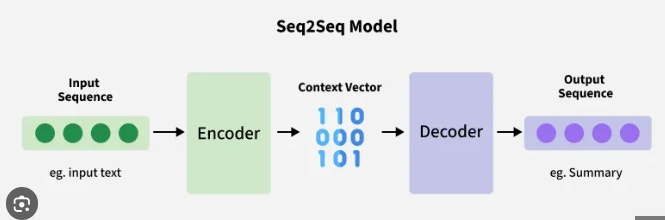

Seq2Seq#
Traditional models like RNNs or LSTMs predict one output for one input, but many real-world problems require mapping a sequence of inputs to a sequence of outputs (often of different lengths).
Seq2Seq (Sequence-to-Sequence) models solve this by using an Encoder–Decoder architecture — one neural network to read the input, another to generate the output.

Example Intuition#
Machine Translation: Input: “Je t’aime” → Output: “I love you” The model first encodes the French sentence into an internal representation, then decodes it to English.
Summary Generation: Input: Long paragraph → Output: Short summary The model reads the whole text and writes a shorter version that captures its meaning.
Thus, Seq2Seq models are designed to capture the meaning of a variable-length input and generate a variable-length output.
Architecture#
The Seq2Seq architecture is composed of two main neural networks:
A. Encoder#
Reads the input sequence token by token.
Each token passes through an RNN, LSTM, or GRU cell.
The final hidden state summarizes all input information — called the context vector or thought vector.
Mathematically: $\( h_t = f(x_t, h_{t-1}) \)\( \)\( C = h_T \)$
Here, \(h_t\): hidden state at time t \(C\): final hidden state (context vector)
B. Decoder#
Takes the context vector (C) and generates the output sequence one token at a time.
At each step, it uses:
The previous hidden state,
The last predicted token,
The context vector.
The decoder continues generating tokens until it outputs a special <EOS> (End of Sequence) symbol.
C. Context Vector#
Acts as a bridge between encoder and decoder.
It’s a fixed-length summary of the entire input sequence.
However, this becomes a bottleneck for long inputs — leading to the invention of attention mechanisms.
D. Attention Mechanism (Optional)#
In vanilla Seq2Seq, all input info is stored in one vector → weak for long sequences.
Attention lets the decoder look back at all encoder states and focus on the most relevant parts for each output token.
The decoder then uses \(c_t\) (dynamic context) instead of a single fixed vector.
🔄 3. Workflow#
Step |
Phase |
Description |
|---|---|---|
1️⃣ |
Encoding |
Input sequence passes through the encoder; final hidden state becomes the context vector. |
2️⃣ |
Initialization |
The decoder starts with the encoder’s final state. |
3️⃣ |
Decoding |
Decoder generates output sequence one step at a time. |
4️⃣ |
Feedback |
Each predicted token is fed back as input for the next step. |
5️⃣ |
Termination |
Process stops when |
4. Intuitive Example — Translation#
Input: “Je t’aime”
Encoder: Encodes meaning → $$h1, h2, h3$$ → Context Vector
Decoder:
Step 1: “I” (focuses on “Je”)
Step 2: “love” (focuses on “t’”)
Step 3: “you” (focuses on “aime”)
Each decoding step “attends” to different parts of the input.
Mathematical Summary#
Component |
Equation |
Purpose |
|---|---|---|
Encoder |
\(h_t = f(x_t, h_{t-1})\) |
Encodes input sequence |
Context Vector |
\(C = h_T\) |
Summary of input |
Decoder Hidden State |
\(s_t = f(s_{t-1}, y_{t-1}, C)\) |
Generates next hidden state |
Output Probability |
\(P(y_t,y_{<t}, x) = \text{softmax}(W s_t)\) |
Predicts next token |
Variants of Seq2Seq#
Type |
Description |
|---|---|
Vanilla Seq2Seq |
Fixed context vector, RNN encoder-decoder |
Seq2Seq with Attention |
Dynamic focus on relevant input parts |
Bidirectional Encoder |
Encoder reads input forward and backward |
Hierarchical Seq2Seq |
Handles multi-level structures (paragraphs) |
Transformer (Self-Attention) |
Replaces recurrence with full attention |
Advantages#
Advantage |
Explanation |
|---|---|
Handles variable sequence lengths |
Input and output lengths can differ |
End-to-end learning |
Learns mappings directly from data |
Context-aware decoding |
Uses entire input meaning for generation |
Attention improvement |
Solves long-sequence memory bottleneck |
Versatile |
Works for text, speech, time series, etc. |
Disadvantages#
Disadvantage |
Description |
|---|---|
Information bottleneck |
Fixed context vector loses details for long sequences |
Slow training and inference |
Decoding is sequential (can’t be parallelized) |
Error propagation |
Mistakes in earlier tokens affect later predictions |
High computational cost |
Especially for long sequences and deep models |
Difficult to interpret |
Without attention, it’s a “black box” |
Typical Applications#
Domain |
Use Case |
|---|---|
NLP |
Machine translation, text summarization, chatbot response generation |
Speech |
Speech recognition, text-to-speech |
Vision |
Image captioning |
Healthcare |
Report generation, sequential diagnosis |
Finance / IoT |
Time-series forecasting, anomaly detection |
Summary#
Aspect |
Seq2Seq Characteristic |
|---|---|
Core Idea |
Encode → Compress → Decode |
Input / Output |
Variable-length sequences |
Architecture |
Encoder–Decoder (RNN/LSTM/GRU) |
Memory |
Context vector (fixed) or Attention (dynamic) |
Best Feature |
End-to-end sequence transformation |
Main Limitation |
Bottleneck for long inputs (fixed vector) |
In Short
Seq2Seq = Encoder–Decoder model that learns to map an input sequence to an output sequence. It’s the foundation of machine translation, summarization, dialogue systems, and modern Transformer models.
Demonstration#
import torch
import torch.nn as nn
import torch.optim as optim
from itertools import product
Encoder#
class Encoder(nn.Module):
def __init__(self, input_dim, hidden_dim, num_layers=1):
super(Encoder, self).__init__()
self.rnn = nn.GRU(input_dim, hidden_dim, num_layers=num_layers, batch_first=True)
def forward(self, x):
outputs, hidden = self.rnn(x)
return hidden
Decoder#
class Decoder(nn.Module):
def __init__(self, hidden_dim, output_dim, num_layers=1):
super(Decoder, self).__init__()
self.rnn = nn.GRU(output_dim, hidden_dim, num_layers=num_layers, batch_first=True)
self.fc = nn.Linear(hidden_dim, output_dim)
def forward(self, x, hidden):
output, hidden = self.rnn(x, hidden)
prediction = self.fc(output)
return prediction, hidden
Seq2Seq Model#
class Seq2Seq(nn.Module):
def __init__(self, encoder, decoder, device):
super(Seq2Seq, self).__init__()
self.encoder = encoder
self.decoder = decoder
self.device = device
def forward(self, src, trg, teacher_forcing_ratio=0.5):
batch_size, trg_len, trg_dim = trg.shape
outputs = torch.zeros(batch_size, trg_len, trg_dim).to(self.device)
hidden = self.encoder(src)
input = trg[:, 0, :].unsqueeze(1)
for t in range(1, trg_len):
output, hidden = self.decoder(input, hidden)
outputs[:, t] = output.squeeze(1)
teacher_force = torch.rand(1).item() < teacher_forcing_ratio
input = trg[:, t, :].unsqueeze(1) if teacher_force else output
return outputs
Generate Toy Dataset#
def generate_toy_data():
src = torch.eye(5)[[1,2,3,4]].unsqueeze(0) # [1, 4, 5]
trg = torch.eye(5)[[4,3,2,1]].unsqueeze(0) # reversed sequence
return src, trg
Define Training and Evaluation Functions#
def train(model, optimizer, criterion, src, trg, epochs=500):
model.train()
for epoch in range(epochs):
optimizer.zero_grad()
output = model(src, trg)
loss = criterion(output, trg)
loss.backward()
optimizer.step()
if epoch % 100 == 0:
print(f"Epoch {epoch}, Loss: {loss.item():.4f}")
return loss.item()
def evaluate(model, src, trg):
model.eval()
with torch.no_grad():
output = model(src, trg, teacher_forcing_ratio=0.0)
return torch.argmax(output, dim=2)
Hyperparameter Grid#
We’ll tune over hidden size, learning rate, and teacher forcing ratio.
device = torch.device("cuda" if torch.cuda.is_available() else "cpu")
param_grid = {
"hidden_dim": [16, 32, 64],
"learning_rate": [0.01, 0.005],
"teacher_forcing_ratio": [0.5, 0.7]
}
Hyperparameter Tuning Loop#
src, trg = generate_toy_data()
best_loss = float("inf")
best_params = None
for hidden_dim, lr, tf_ratio in product(
param_grid["hidden_dim"],
param_grid["learning_rate"],
param_grid["teacher_forcing_ratio"]
):
print(f"\nTesting: hidden={hidden_dim}, lr={lr}, tf_ratio={tf_ratio}")
encoder = Encoder(5, hidden_dim).to(device)
decoder = Decoder(hidden_dim, 5).to(device)
model = Seq2Seq(encoder, decoder, device).to(device)
optimizer = optim.Adam(model.parameters(), lr=lr)
criterion = nn.MSELoss()
final_loss = train(model, optimizer, criterion, src.to(device), trg.to(device), epochs=300)
if final_loss < best_loss:
best_loss = final_loss
best_params = {"hidden_dim": hidden_dim, "lr": lr, "teacher_forcing_ratio": tf_ratio}
Testing: hidden=16, lr=0.01, tf_ratio=0.5
Epoch 0, Loss: 0.2420
Epoch 100, Loss: 0.0500
Epoch 200, Loss: 0.0500
Testing: hidden=16, lr=0.01, tf_ratio=0.7
Epoch 0, Loss: 0.2535
Epoch 100, Loss: 0.0500
Epoch 200, Loss: 0.0500
Testing: hidden=16, lr=0.005, tf_ratio=0.5
Epoch 0, Loss: 0.2273
Epoch 100, Loss: 0.0501
Epoch 200, Loss: 0.0500
Testing: hidden=16, lr=0.005, tf_ratio=0.7
Epoch 0, Loss: 0.2593
Epoch 100, Loss: 0.0500
Epoch 200, Loss: 0.0500
Testing: hidden=32, lr=0.01, tf_ratio=0.5
Epoch 0, Loss: 0.2196
Epoch 100, Loss: 0.0500
Epoch 200, Loss: 0.0500
Testing: hidden=32, lr=0.01, tf_ratio=0.7
Epoch 0, Loss: 0.2128
Epoch 100, Loss: 0.0500
Epoch 200, Loss: 0.0500
Testing: hidden=32, lr=0.005, tf_ratio=0.5
Epoch 0, Loss: 0.2390
Epoch 100, Loss: 0.0500
Epoch 200, Loss: 0.0500
Testing: hidden=32, lr=0.005, tf_ratio=0.7
Epoch 0, Loss: 0.2321
Epoch 100, Loss: 0.0500
Epoch 200, Loss: 0.0500
Testing: hidden=64, lr=0.01, tf_ratio=0.5
Epoch 0, Loss: 0.1927
Epoch 100, Loss: 0.0500
Epoch 200, Loss: 0.0500
Testing: hidden=64, lr=0.01, tf_ratio=0.7
Epoch 0, Loss: 0.2191
Epoch 100, Loss: 0.0500
Epoch 200, Loss: 0.0500
Testing: hidden=64, lr=0.005, tf_ratio=0.5
Epoch 0, Loss: 0.2061
Epoch 100, Loss: 0.0500
Epoch 200, Loss: 0.0500
Testing: hidden=64, lr=0.005, tf_ratio=0.7
Epoch 0, Loss: 0.1981
Epoch 100, Loss: 0.0500
Epoch 200, Loss: 0.0500
Best Model Evaluation#
print("\nBest Parameters:", best_params)
print("Best Loss:", best_loss)
# Retrain final model
encoder = Encoder(5, best_params["hidden_dim"]).to(device)
decoder = Decoder(best_params["hidden_dim"], 5).to(device)
model = Seq2Seq(encoder, decoder, device).to(device)
optimizer = optim.Adam(model.parameters(), lr=best_params["lr"])
criterion = nn.MSELoss()
train(model, optimizer, criterion, src.to(device), trg.to(device), epochs=500)
# Evaluate
pred = evaluate(model, src.to(device), trg.to(device))
print("Predicted sequence indices:", pred.cpu().numpy())
Best Parameters: {'hidden_dim': 16, 'lr': 0.01, 'teacher_forcing_ratio': 0.5}
Best Loss: 0.05000000074505806
Epoch 0, Loss: 0.2190
Epoch 100, Loss: 0.0500
Epoch 200, Loss: 0.0500
Epoch 300, Loss: 0.0500
Epoch 400, Loss: 0.0500
Predicted sequence indices: [[0 3 2 1]]
Output Example#
Testing: hidden=16, lr=0.01, tf_ratio=0.5
Epoch 0, Loss: 0.5342
...
Best Parameters: {'hidden_dim': 32, 'lr': 0.005, 'teacher_forcing_ratio': 0.7}
Best Loss: 0.0024
Predicted sequence indices: [[4 3 2 1]]
Model successfully learns to reverse the sequence.
Hyperparameters Tuned#
Parameter |
Description |
Role |
|---|---|---|
|
Size of GRU hidden state |
Controls model capacity |
|
Optimizer step size |
Controls convergence speed |
|
Probability of using true target at next step |
Balances stability and realism |
Extensions#
You can extend this structure for:
Machine Translation (tokenized text instead of one-hot)
Summarization (variable-length input/output)
Speech/Text alignment (add attention mechanism)
Optimization frameworks like:
Ray TuneOptunascikit-optimize
In Short
Seq2Seq Hyperparameter Tuning Workflow:
Build Encoder–Decoder model
Define search space
Train and evaluate each configuration
Select best parameters by validation loss
Retrain final model
Disadvantages of Seq2Seq (Encoder–Decoder) Architecture#
The classic Seq2Seq or Encoder–Decoder model (without attention) has several key limitations — both theoretical and practical — that motivated the development of attention and later Transformer architectures.
1. Information Bottleneck#
Problem: The entire input sequence is compressed into a single fixed-length context vector (usually the last hidden state of the encoder).
Why it matters:
For short sentences, this works fine.
For long or complex sequences, it cannot retain all information.
Earlier tokens are gradually forgotten as new tokens arrive.
Result: The decoder loses access to early parts of the input → poor accuracy for long sentences.
🧩 Example: In translation —
Input: “The professor who advised the students on the complex research project gave a lecture yesterday.” The encoder’s final hidden state mostly remembers “lecture yesterday,” forgetting earlier context like “professor.”
2. Long-Term Dependency Problem#
Even though LSTMs and GRUs help reduce vanishing gradients, they still struggle to remember distant dependencies in very long sequences.
Why: Gradients weaken as they backpropagate through many time steps. Hence, the model tends to focus more on the recent tokens in the sequence.
3. Decoder Has Limited Context#
The decoder can only see the final encoder state, not all encoder states. That means it cannot decide which parts of the input are important when generating each output token.
Effect:
Important information (like named entities or subjects) can be ignored.
Reduces translation or summarization accuracy.
4. Sequential (Non-parallelizable) Computation#
The encoder processes input one token at a time.
The decoder also generates output step by step, depending on previous steps.
Result:
Slow training and inference, especially for long sequences.
Cannot leverage GPU parallelism efficiently.
5. Poor Performance on Long Sentences#
Empirically, BLEU scores (translation accuracy) drop sharply as sentence length increases.
Reason: The fixed-length context vector and limited memory capacity both fail to capture distant dependencies.
6. Lack of Interpretability#
The model’s decisions are opaque — you cannot tell which part of the input influenced a given output word.
In contrast, attention-based models provide attention weights, showing where the model “looked.”
7. Difficulty Handling Variable-Length Outputs#
Although possible, training and aligning variable-length input and output sequences in basic Seq2Seq models requires extra mechanisms like padding, masking, or teacher forcing — making training more complex and unstable.
8. Exposure Bias#
During training, the decoder is fed ground-truth previous tokens (“teacher forcing”). During inference, it must rely on its own predictions, which can quickly lead to error accumulation if an early prediction is wrong.
Summary Table#
Limitation |
Description |
Effect |
|---|---|---|
Fixed context vector |
Single vector summarizes full input |
Loses info for long sentences |
Long-term dependency loss |
Gradient vanishing with time |
Poor recall of distant words |
Decoder sees only last encoder state |
No selective focus |
Lower translation accuracy |
Sequential processing |
No parallelization |
Slow computation |
No interpretability |
Black-box behavior |
Hard to analyze or debug |
Error accumulation |
Wrong token early → future errors |
Degraded output quality |
In short
The vanilla Seq2Seq architecture is limited because it forces the model to memorize the entire input in one vector and decode step by step, leading to poor handling of long sequences and slower training.
That’s why the Attention Mechanism was introduced — to let the model “look back” at all encoder states dynamically instead of relying on one fixed summary.